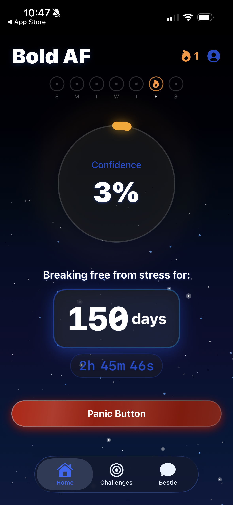
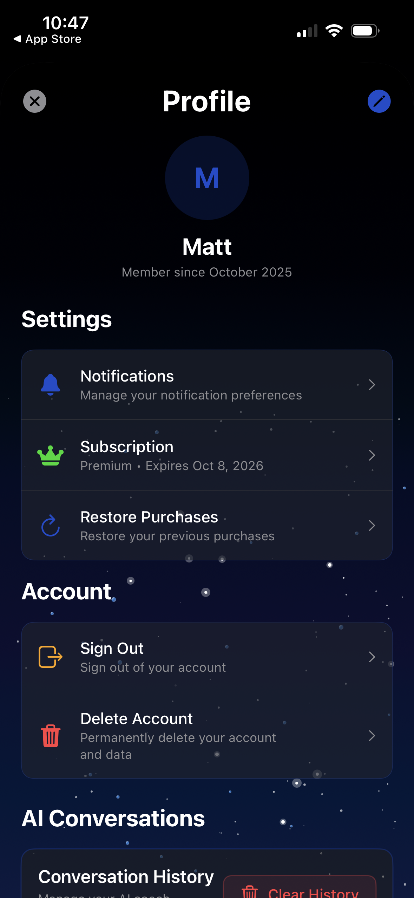

Bold AF helps users step out of their comfort zone through daily challenges, streak tracking, and a real-time confidence score. Built for people who want to take action on their anxiety, not just manage it.



What it does
- Confidence score: Real-time percentage that grows as you complete challenges and hold streaks
- Daily challenges: Curated tasks that push you socially — compliment someone, start a conversation, try something new
- Streak tracking: Weekly view and fire streak counter to keep momentum going
- Panic Button: On-demand feature for high-stress moments — gives you an action to take instead of spiraling
- Bestie AI: Conversational AI coach available in-app for accountability and support
Stack
- Platform: iOS (Swift / SwiftUI)
- Backend: Firebase — auth, Firestore, cloud functions
- AI: Claude API for the Bestie conversation feature
- Monetization: RevenueCat for subscription management